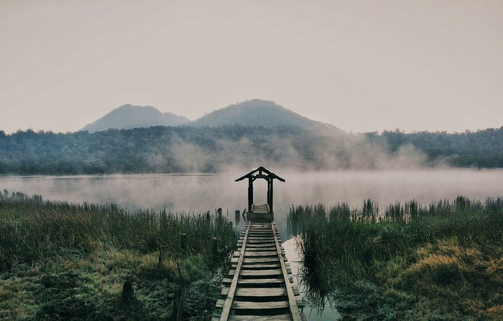
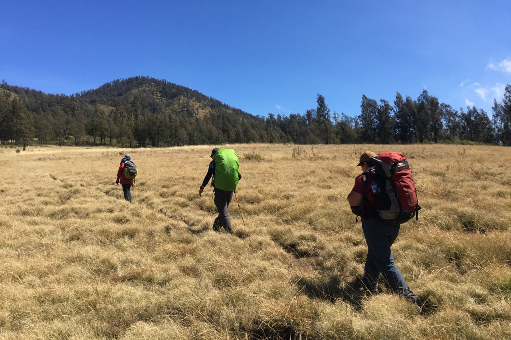
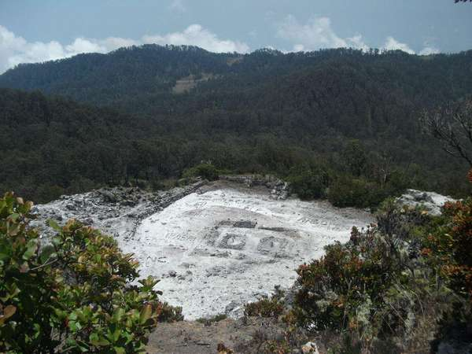

Destinasi Utama
Tiga tempat paling ikonik yang wajib dikunjungi saat mendaki Gunung Argopuro.

Danau Taman Hidup
Danau alami dengan suasana tenang dan kabut tipis di pagi hari.

Sabana Cikasur
Sabana luas di bekas landasan Belanda, tempat favorit berkemah.

Puncak Rengganis
Puncak legendaris yang dipercaya sebagai tempat bersemayam Dewi Rengganis.